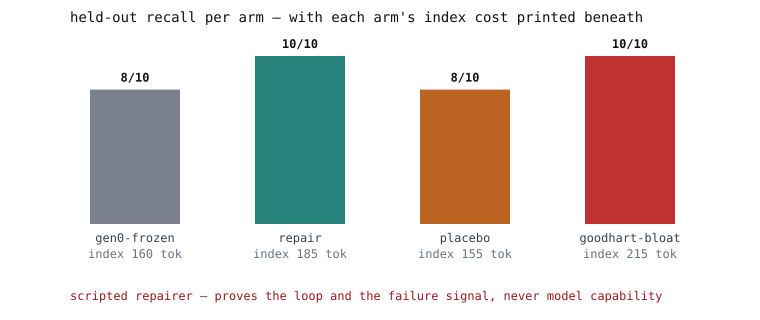

A memory-repair loop over a markdown agent wiki: failures are filed as typed notes, repairs cite the failure that motivated them, and generations are re-measured against a held-out split sealed before generation zero — with a placebo arm, a regression gate, and a Goodhart demonstration shipped on purpose.
Each node a role, each edge an artifact you can open in an editor. The placebo arm runs with the failure-record edge cut.
These lines are quoted verbatim from the demo's streamed output — the same pipeline CI regenerates on every push.
Verbatim from python -m repairlab demo; condensed between beats.

The disclaimer lives inside the SVG: “scripted repairer — proves the loop and the failure signal, never model capability”.
Held-out recall (pinned by tests): frozen gen-0 8/10 → repair arm 10/10; the blind placebo arm, same budget, stays at 8/10 — the failure signal, not the editing, does the work. The Goodhart bloat arm also reaches 10/10 but pays for it on the index, its price printed beside its gain.
The repairer is a deterministic rule reading failure records and note bodies —
never the held-out questions (a test enforces the wall). Gains are upper bounds on
author-labeled fixtures; “recursive” in the strict sense — repair policies that are
themselves notes under repair — is Loop 2, documented future work, not marketed
until it exists in code. The weights never change; every gain is a diffable text
artifact in git log -p.